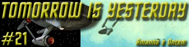

|
Série
Clássica
Temporada 1

Análise do episódio por
Carlos Santos

|

|
MANCHETE
DO EPISÓDIO Episódio anterior | Próximo episódio Data Estelar: 3113.2.Enquanto rumava em direção a Terra, a USS. Enterprise é pega pela atração gravitacional de um buraco negro, e no processo para se libertar acaba sendo jogada de volta no tempo, na segunda metade do século vinte, na atmosfera terrestre, as vésperas do primeiro pouso do homem na lua. Ainda parcialmente incapacitada devido às avarias causadas no esforço para se libertar a nave é captada por uma estação de radar de uma base aérea americana que envia um avião para investigar o estranho contato. O avião, pilotado pelo capitão John Christopher, estabelece contato visual com a nave enquanto esta ainda luta para retornar a altitude de órbita padrão. Christopher recebe ordens de impedir a fuga do que os militares identificaram como um OVNI, atirando nele se necessário. Kirk, que monitorava a comunicação entre a aeronave e sua base, é alertado por Spock que, devido às avarias, talvez a nave estelar não suporte um impacto de um disparo (de um míssil com ogiva nuclear) do caça. Ele então ordena a Scott que prenda o avião com o raio trator, mas este não suporta o esforço e começa a se desfazer, obrigando Kirk a trazer Christopher a bordo via o tele-transporte. Após se materializar, Christopher fica a principio desorientado, enquanto Kirk tenta explicar o que aconteceu ao confuso piloto da força aérea. Depois da experiência do tele-transporte, Christopher vai ficando cada vez mais confuso primeiro com a explicação de Kirk para o fato de a Enterprise estar ali, e também ao se deparar entre outras coisas com mulheres tripulantes circulando a bordo, e principalmente com a visão de Spock, um alienígena. Quando começa a sentir-se um pouco mais aliviado, Christopher é informado por Kirk que não poderá ser enviado de volta a Terra, pois teria adquirido conhecimento demais sobre o futuro e se este conhecimento se tornasse publico o próprio futuro poderia ser alterado. Christopher protesta alegando que seu desaparecimento também poderia mudar algo no futuro, mas Spock reage dizendo que suas pesquisas históricas não revelaram nenhuma contribuição importante de John Christopher para a historia. Enquanto a tripulação da Enterprise pensa em seus próprios problemas, ou seja, retornar a seu tempo, Spock encontra uma falha em sua pesquisa inicial a qual não havia considerado possíveis contribuições de descendentes de John Christopher. Durante nova pesquisa ele descobre que um filho, ainda não nascido de Christopher, o Coronel Sean Jeffrey Christopher, será responsável pela primeira sonda a alcançar Saturno. Kirk descobre nesta hora que Christopher está tentando escapar e o impede pouco antes deste obrigar o operador de transporte, Sr Kyle, a transportá-lo de volta a Terra. Na enfermaria, após se recuperar do soco que havia levado de Kirk, Christopher acorda e é informado das descobertas de Spock, que também diz a Kirk que eles serão obrigados a devolver o capitão a Terra, pois caso contrário seu filho não nasceria e o futuro poderia ser alterado. Kirk e Spock elaboram um plano que tem como intenção recuperar fotos que foram tiradas por Christopher usando câmeras em seu avião, e que haviam sido encontradas entre os destroços do aparelho. Kirk e Sulu vão até a base, e enquanto estão pegando os rolos de fita do velho computador, são apanhados por um sargento da segurança da instalação que acidentalmente é levado a bordo da Enterprise, complicando ainda mais a situação de Kirk e Cia. Ainda na base, uma outra equipe de segurança encontra Kirk, que inicia uma luta que fornece o tempo necessário para Sulu retornar a nave com as fitas, entretanto o capitão da Enterprise fica preso, e é interrogado pelo pessoal da base. Sem alternativas Spock desce a base, junto com Sulu, levando também o capitão John Christopher numa tentativa de resgatar Kirk. A ação é bem sucedida, mas quando deviam voltar a bordo, Christopher se recusa a retornar ameaçando o grupo com uma arma que ela havia tomado as escondidas de um segurança da base. Spock, que desconfiava que Christopher tentaria algo, e havia se retirado do local pouco antes, retorna e o surpreende, mais uma vez o impedindo de realizar sua intenção de escapar da custódia de Kirk e cia. De volta a Enterprise e com todas as provas fotográficas resgatadas, Spock e Scott apresentam seu plano para retornar ao futuro, que prevê uma corrida em direção ao Sol seguida de uma súbita tentativa de escapar da atração gravitacional da estrela causando uma repetição (ao contrario) do efeito que lançou e nave no passado. Durante o retorno no tempo os dois passageiros indesejados seriam devolvidos e no processo, suas memórias das experiências relativas à presença da Enterprise seriam apagadas. Kirk segue o plano que funciona de acordo com o previsto, Christopher e o sargento da base são devolvidos aos seus devidos lugares e todas as lembranças da presença da Enterprise desaparecem, e a nave retorna a seu tempo sem maiores problemas.
O obvio necessário a dizer sobre “Tomorrow Is Yesterday” é que este é um clássico em Jornada nas Estrelas. Ele inaugura a longa cumplicidade da franquia com o mote das viagens temporais e questões afins. Alguns irão dizer que a primeira viagem no tempo da Enterprise aconteceu na verdade no final de “The Naked Time” (da mesma D.C. Fontana), mas naquele episódio a pequena viagem de três dias da Enterprise no final do episódio não teve nenhuma importância para o contexto da história. Sendo simplesmente um gancho gratuito para uma continuação abortada muito tarde no processo de produção da série (e deixando uma marca absolutamente bizarra no segmento). Já no presente episódio o “efeito rebote” (que seria mais bem traduzido pela dublagem como “efeito estilingue”) que inicia toda a celeuma ao jogar a USS Enterprise no ano de 1967 - de acordo com a sua data de exibição - está repleto de drama, aventura e diversão, a começar pela própria profecia anunciada no episódio, pois o citado primeiro passeio do homem na lua aconteceria quase dois anos depois da exibição deste em 20 de julho de 1969. Já a abertura do episódio, que utiliza imagens externas de interceptadores “F104 Starfighter” preparando-se para decolar ou em vôo, e logo a seguir a visão de uma Enterprise contra as nuvens, dão a indicação de que algo diferente acontecera neste segmento, pelo menos diferente em relação às edições anteriores da Série Clássica. Estas imagens de arquivo deste caça da série “Century” são importantes por que conseguem emprestar mais credibilidade ao segmento do que o visual da Enterprise se arrastando para sair atmosfera, - coisa complicada pelo que conhecemos dos sistemas de propulsão da nave -. Por questão de justiça deve-se descontar a dificuldade técnica para realizar tal seqüência na época. De qualquer forma a situação de crise é instalada, uma crise real, pois a analise de Spock quanto à vulnerabilidade da Enterprise após ser jogada ao passado é correta e a ação de Kirk totalmente justificada se pensarmos que a Enterprise havia saído de uma situação muito perigosa momentos antes e que ele tinha pouco tempo para pensar na decisão a tomar. Ele decide trazer Christopher a bordo, o que nos apresenta a principal conseqüência da viagem não planejada da Enterprise, que é colocar um homem do século vinte dentro da Enterprise, e com isto realizando indiretamente o desejo de muitos fãs que com certeza sempre sonharam em ter a oportunidade de Christopher. E ele se sai muito bem, confuso a principio, mas logo se adaptando com alguma facilidade a sua situação no mínimo pitoresca. Christopher longe de ficar maravilhado por estar a bordo, faz o que todo ser humano normal tentaria fazer, ou seja, fugir. Esta firmeza de propósito do personagem interpretado por Roger Perry é fundamental para propiciar diversas situações engraçadas, o que alias parece desde o inicio seu principal objetivo. Não há aqui nenhuma intenção de discutir teses sobre viagens temporais e seus paradoxos de forma “séria” e por não se levar a sério este episódio é diversão garantida. Embora a curta caminhada de Christopher da sala de transporte até a ponte da Enterprise não pareça ter relevância suficiente para alterar o futuro da humanidade, esta motivação serve como combustível para os eventos que se desencadeariam em seguida. A partir daí uma série de situações são desenvolvidas com base em elementos amplamente conhecidos em Jornada, como a presença de mulheres a bordo, integrando a tripulação, num período em que elas ainda não eram aceitas no serviço militar, ou a presença de uma tripulação bem miscigenada, o que é mais notado quando Christopher encontra Spock, apesar das presenças de Sulu e Uhura na ponte. O episódio também mexe com a neurose em relação à vida extraterrestre e aos fenômenos de OVNIs e acrescenta a mitologia da série à informação de existência - em um determinado momento – de 12 naves da classe Constitution em serviço na Frota Estelar. Um deleite para os fãs que gostam de garimpar e contabilizar este tipo de informação. Alguns destes elementos foram ou serão mostrados em outros episódios da Série Clássica, mas nesta edição eles ganham destaque devido à estrutura do episódio que é ambientado no século vinte e tendo um militar “convencional”, no caso Christopher, visitando a nave. O episódio é extremamente bem humorado, mas sem expor ninguém ao ridículo. Aos poucos uma série de situações vão se colocando diante de nossos heróis, onde as interações entre Kirk, Spock e McCoy –com desempenhos muito competentes de Shatner, Nimoy e Kelley – estão absolutamente sintonizadas com o perfil de cada personagem e produzem momentos do melhor bom humor já realizado na Série Clássica, construindo um episódio leve e absolutamente agradável de assistir. Talvez seja este o maior mérito do segmento, pois uma vez que era óbvio que a tripulação da nave encontraria uma solução para seus problemas o roteiro escolhe se concentrar nas situações inusitadas que podem acontecer, e o faz com maestria. O momento em Spock admite a sua falha durante a pesquisa sobre Christopher é, como disse McCoy, um momento histórico, pelo menos na Série Clássica. Mais do que nas equações de Spock e Scott, o efeito do tempo é sentido através de uma piada que perdeu a graça, no caso o comentário de Kirk e Sulu sobre a obsolescência dos computadores da base, o que antes era uma troça e hoje um fato. Definitivamente uma mensagem sobre o tempo que os roteiristas jamais pensaram em contar, mas que com a chegada do seriado aos dias atuais fica evidente. Assim como bons vinhos, boas idéias tendem a se refinar ainda mais com o tempo. Um dado curioso é que o problema no computador da nave é relatado no livro “Web of the Romulans” que no Brasil chamou-se “A Teia dos Romulanos” e foi publicado pela editora Aleph. Neste texto, a personalidade feminina do computador faz com que este se apaixone pelo capitão causando problemas ainda maiores do que os vistos em “Tomorrow is Yesterday”. Na relação de problemas podemos creditar alguns deslizes de diferentes graus de importância, começando pelo fato de Christopher ficar sem vigilância a bordo da Enterprise, mesmo deixando claro que tentaria fazer o máximo para escapar e relatar o que lhe tinha acontecido, o que obviamente o obrigaria a deixar a nave, o que é claro ele acaba tentando fazer por duas vezes. Mesmo assim, bastaria ao tripulante Kyle a quem nosso bravo capitão do passado ameaça com um feiser, transportar Christopher para qualquer lugar da nave como, por exemplo, uma cela de segurança, o que tornaria desnecessário o direto no queixo que ele recebeu de Kirk que voltaria a repetir sua solução “estilo Stalone” ainda neste episódio, dando uma deixa para uma tirada de Spock, que bem poderia ser uma sátira aos diversos “combates corpo a corpo” que viríamos na Série Clássica: “Não acha isto doloroso, capitão!?”. Outra coisa difícil de explicar, embora comum ao longo da Série Clássica, é por que arriscar o capitão numa missão dessas quando qualquer candango de plantão poderia fazê-lo e ainda, e por que não usar umas roupas locais ao invés dos uniformes da Frota, o que aumentaria as chances de sucesso na incursão da equipe de terra. Aliás, parece óbvio que o interrogatório de Kirk inspirou o interrogatório de Chekov (a bordo do porta-aviões Enterprise) em Jornada Nas Estrelas IV: A Volta Para Casa. (Destaque também para mais uma participação de Sulu, hora como piloto, hora auxiliando Kirk enquanto este busca as fotos tiradas por Christopher em terra.) Mas as falhas mais graves são encontradas durante o processo de elaboração e execução da solução final do episódio, que chega a galope e atropela a até então excelente condução do segmento. É necessária uma dose maciça de “suspensão de descrença” para engolir a concepção e a execução da teoria que permitiu o lançamento da Enterprise no passado, e posteriormente seu retorno a sua própria época, (hipótese que não discutiremos aqui por já ter sido feito em outras ocasiões), um conceito reutilizado no já citado filme Jornada Nas Estrelas IV: A Volta Para Casa (grandemente influenciado pelo presente segmento), mas isto por si só não ajuda a explicar o exercício de imaginação feito para conceber o retorno da nave ao momento em que ela chegou ao passado. Não há como explicar por que o capitão Christopher e o sargento que também veio a bordo tiveram suas memórias sobre o acidente esquecidas e a tripulação da Enterprise não sofreu o mesmo efeito, sem falar que a ordem de descida de ambos parece invertida, sem falar que o processo todo é confuso, “entortado” para encaixar as necessidades do roteiro. Os cronômetros da Enterprise girando ao contrario e a péssima execução do “efeito” da nave se libertando da atração do Sol onde se vê nitidamente as linhas que prendem o modelo da Enterprise e a imagem de Sulu batendo no console igual a um alucinado não ajudam a digerir estes defeitos. Outro dado no mínimo curioso, é que um procedimento tão complicado não seja controlado pelo computador da nave. Observando o tempo que Spock levou na segunda “inversão” para avisar Kirk e o tempo que este levou discutindo com Scott sobre os efeitos desta ação sobre a nave, é de espantar que eles não tenham ido parar lá pelo século XXX.
Mesmo
assim, se levarmos em conta ser este um episódio pioneiro, tanto na
idéia quanto na execução, e todas as dificuldades já citadas
para levar a cabo a empreitada, o resultado final é positivo,
fazendo com que “Tomorrow Is Yesterday” tenha um lugar de
destaque na memória afetiva dos fãs da Franquia.
Christopher
- “Must have taken quite a lot to build a ship like this”. Christopher
- “I never have believed in little green men.” Christopher
- “Then my disappearance would change something, too.” Christopher
- “I see physical training is required in your service, too.” Spock
- “I made an error in my computations.” Kirk
- “If I remember my history, these things were being dismissed as
weather balloons, sundogs, explainable things-- at least publicly.” McCoy
- “Shouldn't you be working on your time warp calculations, Mr.
Spock?” Kirk
- “The truth is, I'm a little green man from Alpha Centauri, a
beautiful place. You ought to see it." Spock
- “Don't you find that painful, Captain?” Spock
- “My computations indicate that if we fly toward the sun, seek
out its magnetic attraction, then pull away at full power, the
whiplash will propel us into another time warp." Christopher
-”I never thought I'd make it into space. I was in line to be
chosen for the space program... but I didn't qualify.” Comando
da Frota Estelar - “Enterprise, this is Starfleet Control. Come
in, please.”
Escrito por D.
C. Fontana Elenco:
|